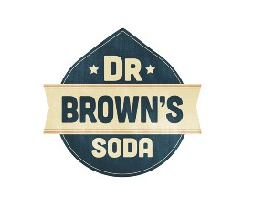
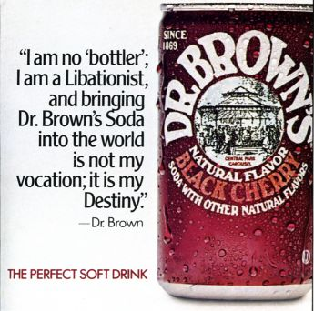

About Dr. Browns

Dr. Brown's was created in 1869 and was commonly sold in New York delicatessens and by soda salesmen who sold the product from door to door in Jewish neighborhoods.

According to former marketing director, Harry Gold, a New York doctor used celery seeds and sugar to invent the cream soda and celery tonic now known as Cel-Ray, which was advertised as a "pure beverage for the nerves."
In the early 1930s, before Coca-Cola received kosher certification, many Jewish people drank Cel-Ray soda as well as the other flavored soda that had been created by Dr. Brown.
In the last 25 years, the cans were redesigned by Herb Lubalin.
Each of the six Dr. Brown's flavors is packaged with a New York vignette taken from old prints, to emphasize the brand's origins in 1800s New York.